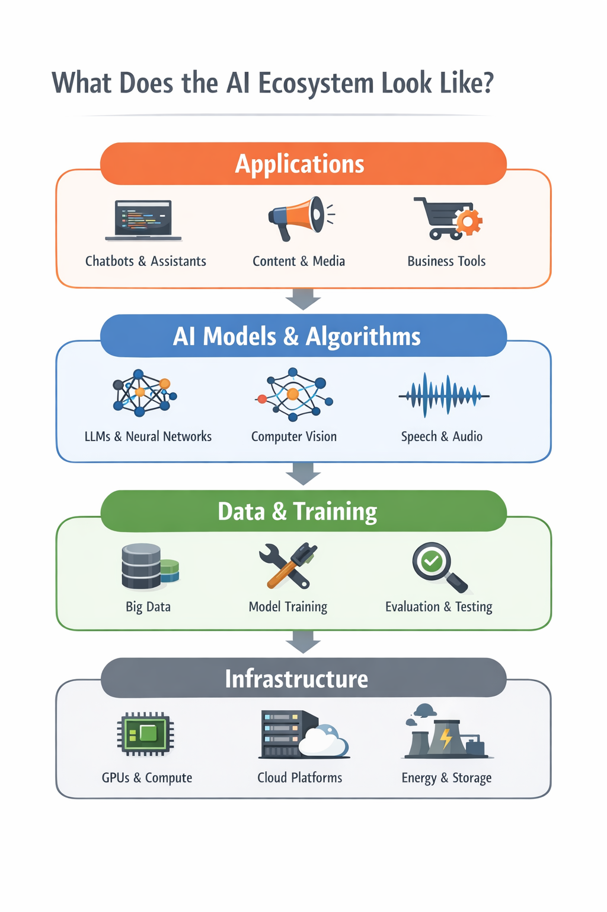

In the previous article, I tried to simplify what AI really is and how to think about it at a basic level. In this one, let’s zoom out and look at the bigger picture — the landscape in which all of this is evolving.
AI feels chaotic — but it’s not
If you’ve been following artificial intelligence over the last couple of years, it can feel overwhelming.
There is always something new happening. A new model gets released, a new tool becomes popular, a new idea starts trending. Just when things begin to settle, another wave of change appears. One moment the conversation is about chatbots, the next it shifts to AI agents, and before you know it, people are talking about chips, energy consumption, regulations, and trillion-dollar investments. At times, it feels like everything is moving too fast to make sense of. That feeling is natural.
But if you step back, a different picture starts to emerge. What looks chaotic on the surface is not random. There is structure beneath it. There are patterns in how the technology is evolving, how businesses are adopting it, and how the entire ecosystem is taking shape.
A large majority of organizations today are already using AI in some form, and global spending is moving toward the trillion-dollar range. At the same time, progress is no longer just about building smarter models. It is about running them at scale, governing them responsibly, and sustaining the infrastructure that powers them. AI is no longer just a collection of tools. It is becoming something you build on top of. And once you begin to see it that way, the noise starts to settle.
This article is an attempt to provide that lens — not a perfect map, but a useful one. Enough to navigate without feeling lost.
What does the AI ecosystem actually look like?
Once the noise reduces, a natural question follows. If AI is not random, what does its structure actually look like? A useful way to think about it is as a layered system, where each layer builds on top of the one below it.
At the foundation, there is data. Everything begins here. Models learn patterns from data — text, images, code, interactions. The quality and diversity of this data shape what AI systems can ultimately do. In many ways, this is the raw material of the ecosystem.
On top of that sit the models. These are the systems most people associate with AI — language models, image generators, and other foundation models. Over time, they have become more capable, not just more accurate. They can handle longer context, work across different modalities, and reason through more complex tasks.
Above the models is a layer that is becoming increasingly important — tools and techniques. Modern AI systems do not rely only on what they learned during training. They can retrieve information, call external tools, and interact with other software systems. This is what makes them useful in real-world workflows.
Then come the applications. This is where AI becomes visible. Chatbots, coding assistants, customer support systems, fraud detection tools, content platforms — these are all applications built on top of models and tools to solve specific problems.
Surrounding all of this is infrastructure and governance. None of the above works without compute, data centers, and energy. At the same time, as AI becomes more powerful, questions of safety, regulation, and responsible use become critical. This outer layer ensures that the system can scale without losing control.
If you visualize this, it looks like a stack — each layer building on top of the previous one.

When you look at AI this way, things begin to connect. A new model release does not just improve performance. It impacts tools and applications above it. A regulatory change does not just affect policy. It shapes how systems are built and deployed. Even energy availability can influence how fast AI grows. AI is not evolving in parts. It is evolving as a system.
What’s driving this rapid growth?
Once the structure is clear, the next question is obvious. Why is AI moving so fast? The answer lies in two forces reinforcing each other: adoption and investment.
Organizations are no longer experimenting with AI — they are using it. Close to 88% of organizations are already applying AI in at least one function. This marks a clear shift from curiosity to utility. What was once a pilot is now becoming part of everyday workflows. And once adoption reaches this level, momentum builds quickly. What starts as innovation turns into expectation.
At the same time, investment in AI has reached an entirely different scale. AI is becoming a trillion-dollar layer in the global economy. This level of investment fuels infrastructure, research, and product development at a pace that few technologies have seen before.
These two forces create a feedback loop. Adoption drives investment. Investment accelerates adoption. But there is a deeper shift underneath. The question is no longer, “Can AI do something impressive?” It is, “Does this actually improve how we work?” AI is moving from capability to usefulness. And that shift is quietly shaping everything that follows.
What is actually improving in AI today?
For a long time, progress in AI was driven by one idea. Make models bigger. More data, more parameters, more compute. And for a while, this worked.
But today, the story is changing. It is no longer just about size. It is about capability. Modern systems are better at following instructions, handling long interactions, and working through complex tasks. Some can process extremely large context in a single interaction — something that was not practical earlier.
Another shift is toward multimodal systems. AI is no longer limited to text. It can understand and combine text, images, audio, and more. This makes interactions more natural and closer to how humans process information.
Then comes tool usage. AI systems are no longer just answering questions. They can look things up, call APIs, and interact with software. In simple terms, they are moving from responding to acting.
This leads to the idea of agents. Systems that can plan, take steps, use tools, and attempt to complete tasks. But this is where it is important to stay grounded. Agents are improving, but they are not yet reliable enough to operate independently in most real-world scenarios. They work best within boundaries, with human oversight.
The shift is clear. From bigger models to more capable systems. From text to multimodal understanding. From passive responses to active execution. From interactions to early autonomy. The real story is not that AI is getting bigger. It is that AI is getting usable.
What are people actually using AI for?
It is easy to get lost in capabilities. But the real question is simple. Where is AI actually being used?
One of the most visible areas is software development. AI is becoming a companion for developers — helping write code, explain logic, and reduce repetitive work. This allows developers to spend more time thinking and less time typing.
Another major area is customer support. AI systems handle routine queries, assist human agents, and maintain consistency. They are not replacing people entirely, but reshaping how support is delivered.
AI is also widely used in content creation. From drafting and summarizing to generating ideas, it is becoming a productivity tool for anyone working with information.
A less visible but critical area is fraud detection and risk analysis. In industries like banking and payments, AI helps identify patterns and flag anomalies at a scale humans cannot manage alone.
What ties all of these together is not the domain, but the nature of work. AI fits best where work is information-heavy, repetitive, and decision-driven. It is not replacing jobs. It is replacing patterns of work.
What are the real problems?
With all the progress, it is tempting to think AI is close to being solved. It is not.
The most visible issue is hallucination. AI can generate confident but incorrect responses. In some cases, this is harmless. In others, it is risky. AI today is powerful, but not trustworthy by default.
Closely related is reliability. The same system can perform well in one situation and fail in another that looks similar. This inconsistency makes it hard to depend on without safeguards.
Then there is cost. Running AI systems at scale is expensive. As usage grows, managing cost becomes a core engineering challenge.
And finally, there is energy. Behind every AI interaction is a data center consuming power. As adoption increases, so does the demand for electricity.
These are not minor issues. They define the limits of what AI can do today. The next phase of AI will not be defined only by intelligence. It will be defined by reliability, efficiency, and responsibility.
What is slowing AI down?
AI is moving fast. But it is not moving freely.
One of the biggest constraints is compute, especially GPUs. Access to high-end hardware is limited and expensive. This creates a bottleneck for scaling.
Then comes energy. AI’s growth depends on data centers, and data centers depend on power. The gap between compute demand and energy supply is becoming a real constraint.
The third factor is regulation. As AI becomes more powerful, governance becomes unavoidable. Regulations add friction, but they also create trust.
The key shift is this. AI is no longer limited by what we can build.It is limited by what we can run, sustain, and govern.
Where is this heading?
Looking ahead, three forces stand out.
First, agents. The idea of AI systems that can take goals and execute tasks is gaining momentum. But these systems are still early. They are useful, but not yet dependable enough to operate independently. Agents are coming, but they are not magic yet.
Second, the infrastructure race. Companies and countries are investing heavily in data centers, chips, and networks. This race will shape who can scale AI fastest.
Third, governance. As AI integrates deeper into workflows, managing risk becomes essential. Governance is no longer optional. It is part of the system.
AI is evolving along three axes: capability, infrastructure, and control. The future will be shaped by how these stay in balance.
A closing thought
AI is no longer just a technology trend. It is becoming a foundational layer beneath everything we build. The biggest shift is not that AI is improving. It is that we are starting to depend on it in ways we do not fully understand yet.
You do not need to track every new model or tool. What matters is having a clear way to think about it. Once you understand the landscape, the noise starts to fade. The updates begin to connect. The direction becomes visible.
We are still early. But the system is taking shape. And understanding that system might be one of the most valuable things you can do right now.
Understanding the landscape helps you make sense of what is happening. The next step is learning how to use these systems effectively in your own work. I’ll dive into that in the next article.
This article was originally published on Medium and is being adapted here as part of my long-term knowledge hub.
Read original on Medium